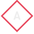

<div class="container-fluid vh-100 w-100">

  <nav class="navbar fixed-top">
    
    <button class="navbar-toggler" type="button" (click)="showSideNav()" *ngIf="!sideNavOpened">
      <i class="navbar-toggler-icon menu-icon">≡</i>
    </button>
  </nav>

  <app-sidebar></app-sidebar>

  <app-main></app-main>

  <footer class="row text-center">
    <div class="col-12">
      <div class="copyright-text">
        © Copyright 2021 Alessandro Roic. All Rights Reserved.
      </div>
    </div>
  </footer>

  <div class="mb-3 mr-3 fixed-bottom text-right" *ngIf="showButtonArrow">
    <button type="button" class="arrow" (click)="goBackTop()">
      <span class="arrow-text">▲</span>
    </button>
  </div>

</div>
